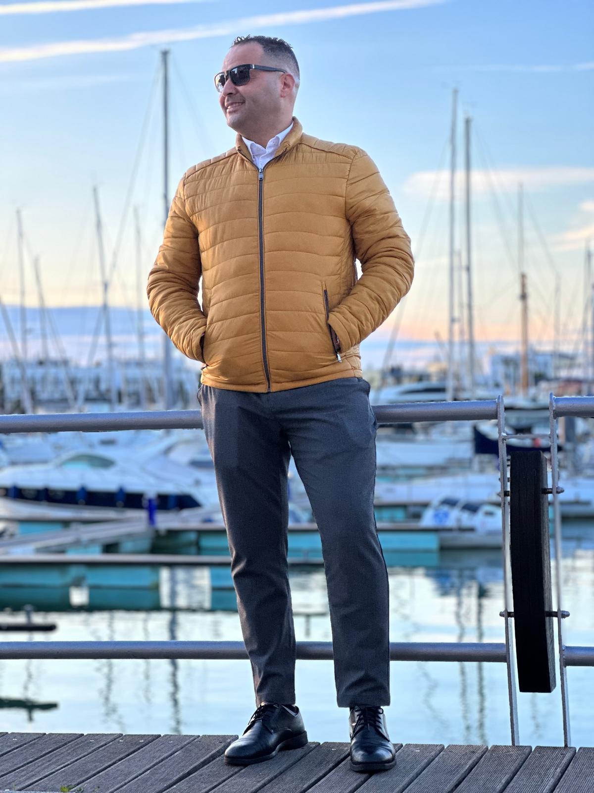

Nossa Equipe
Advogados Associados

Dr. Allan Cardoso de Jesus
Advogado – OAB/PR 115.881
Especialista em ações revisionais, direitos de imigrantes e justiça social. Fundador da ACJ Advocacia.

Dra. Ruany Santos
Advogada – OAB/PR 113.736
Especialista em Direito do Trabalho, Regularização de Imóveis e Direito de Família.
Setor de Compliance e Tecnologia
Relações Internacionais

Abdesselam Boutadla
CEO de Logística e Comunicação
Natural do Marrocos. Fala árabe, português, espanhol, inglês e francês. Atua como assessor, tradutor e mediador internacional da ACJ Advocacia.